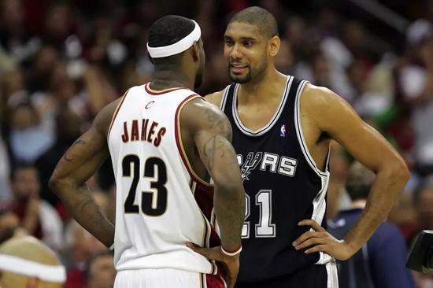
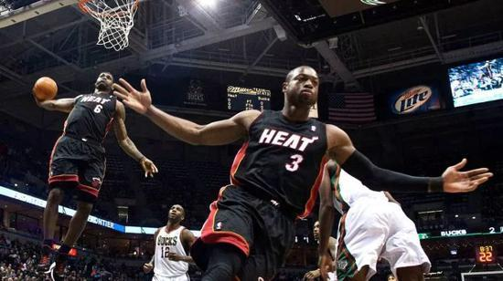

公告——
昵称：卡卡罗特
博客年龄：2年
粉丝：350w
关注：600
搜索——
热门标签——
留言板——
铁打的詹姆斯流水的NBA 联盟第1人还是他
詹姆斯2K能力值98
NBA2K是一款颇受NBA球员和球迷们喜爱的电子游戏。每年夏天，游戏都会根据联盟的最新阵容以 及球员的成长状况推出全新的版本，而球员在新版本中的实力数据也成为了人们热议的话题。今天 凌晨，NBA2K官方发布了最新一代游戏产品NBA2K19中勒布朗-詹姆斯的实力数据。98分，相比去年 的得分还提升了1分。尽管已詹姆斯已经独自霸占NBA2K排行榜榜首的位置长达7年的时间，但是来到 新的赛季，似乎这个位置依然还是属于勒布朗。新赛季，身披湖人战袍的詹姆斯不仅登上了2K游戏20 周年纪念版的封面，而且还创下了近4年来的生涯新高峰。正如他自己所说，“这个分数对于我这样的 老头子来讲的确不赖啊。”
对于一个33岁的老将来讲，这样的逆生长看上去似乎有些不可思议，但实际上如果我们去关注去年他 的表现，就会发现，游戏数值的增长也算是实至名归。上赛季，詹姆斯也是在职业生涯中首次打满全 部82场比赛，而且出场时间也是联盟第一。在强力的体能支撑下，詹姆斯打出了职业生涯新高的场均 篮板和助攻数据，同时场均得分也创下了2010年以来的新高数据。各项数据表明，要想在詹姆斯身上 找到所谓的岁月痕迹，可真够难的。自从2005年开始，也就是NBA2K6当中，詹姆斯的个人数据就已经 冲到了97分的高分，在联盟中仅次于如日中天的凯文-加内特和蒂姆-邓肯。在随后的一个赛季里，詹 姆斯不仅打出了职业生涯最高的场均得分，而且还带领球队时隔7年重新打进了季后赛。在历经7场大 战之后，詹姆斯最终不敌团队实力更为强悍的活塞队，止步东部半决赛。
新赛季，NBA2K7更是给詹姆斯打出了98分的联盟第一高分。而小皇帝也不负众望，几乎仅凭一己之力带 领骑士打进总决赛。无奈面对更加成熟的马刺GDP组合，遗憾遭遇横扫。也是在这一年，邓肯说出了那 句堪称是伟大预言的话语，“未来是属于你的。”在接下来的三年里，虽然詹姆斯个人的表现已然变得越 来越成熟，常年贡献场均28+7+7的表现，但是可是骑士队却越来越找不到前进的方向。詹姆斯身边的帮手 一茬接一茬的换，从“大Z”伊尔戈斯卡斯和拉里-休斯到莫-威廉姆斯，再到安托万-贾米森和老迈的奥尼尔 ，连年变阵的骑士队都无法再创辉煌。连续三年，NBA2K虽然还是给詹姆斯打出了联盟前二的高分，但是距 离一统江湖，始终只差临门一脚（即便排名第一也是三人并列）。不得不说，2K体育对于联盟整体趋势的 把握，真是妙到毫巅。
2010年，詹姆斯公布了著名的决定，将自己的天赋带到了南海岸的迈阿密，同届球员德维恩-韦德和克里斯-波什 也是詹姆斯职业生涯中所遇到的最强的队友。决定一出，2K体育便将詹姆斯的个人能力值调到了联盟最高，与科 比、韦德并列，都是97分。虽然2011年詹姆斯和热火未能在组成三巨头的第一年里就问鼎总冠军。但2K体育显 然已经有了自己心中的答案。在NBA2K12中，詹姆斯以98分的高分独占榜首。随后7年，詹姆斯完成了NBA2K的7连 庄，不论得分数值高低，稳稳的都是NBA球员当中个人能力值最高的一位，没有并列。纵观詹姆斯在2K的这16年， 也体现出他职业生涯的两大特点。
其一在于超强的稳定性。连续14个赛季保持联盟前二的水准，铁打的勒布朗，流水的NBA。15年来，他送走了奥尼尔 ，送走了邓肯，送走了科比，过去唯一跟他并列榜首的球星也就只剩下韦德一人依然没有退役。之所以他能十几年如 一日的保持稳定，一方面原因在于勒布朗的个人技术日臻全面，要想防住他变得越来越困难了。而他一丝不苟的职业 习惯。自从他进入联盟开始，多少球星因为各种伤病逐渐从人们的视野中消失，但是詹姆斯却很少 遭遇严重的伤病。职业生涯15年，出勤率更是高达94%，放眼当今联盟着实鲜有人能比得了的。除了严格自律的生活 习惯之外，勒布朗还愿意在身体保养上花费大量资金，像高压氧仓，冷冻罐等运动黑科技他也是联盟中最早的使用者 和推崇者之一。
其二便在于超高的成长性。有人说这不对啊，自从NBA2K5开始他的个人能力值就有97了，场均表现也都趋于稳定。但 实际上，仔细看来进步还是有的，尤其是当詹姆斯的对手对他的研究得越来越透彻的时候，如果这时詹姆斯还能保持 最顶级的水准，那么这种稳定性本身就是一种进步。刚进联盟的时候，詹姆斯被诟病为投篮能力差，得分不稳定，但 在接下来的10个赛季里，詹姆斯的投篮命中率竟然连续10个赛季单调上涨。这其中有他对于进攻选择的调整，有对投 篮姿势的打磨，再加上背身和低位技术的引入。虽然刚进联盟的时候，詹姆斯仅凭硬霸的身体天赋就被誉为“小皇帝”， “天选之子”，可正是他孜孜不倦的职业态度才促使他十年如一日的取得进步的重要原因。也正是因为这种态度，才将 他的职业生涯推向了后乔丹时代的新巅峰。
新赛季，詹姆斯也又将迎来全新的挑战。詹姆斯能否适应西部激烈的竞争环境？湖人的年轻阵容能否助力他再向联盟巅峰 发起挑战？年龄又增长了一岁，詹姆斯能否继续赢下与时间的赛跑？一切都是全新的开始，没人知道答案。不过NBA2K18 给出的超高评分又如同一粒定心丸，看上去，下赛季詹姆斯还是那个舍我其谁的联盟霸主。毕竟过去十几年年来，他和 NBA2K从来没有让人失望过。